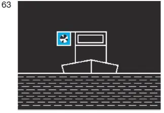
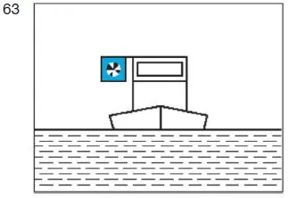

§ 6.04 Allgemeine Bestimmungen für das Begegnen(Anlage 3: Bild 63)
Binnenschifffahrtsstraßen-Ordnung
1. Beim Begegnen muss der Bergfahrer unter Berücksichtigung der örtlichen Umstände und des übrigen Verkehrs dem Talfahrer einen geeigneten Weg freilassen.
2. Ein Bergfahrer, der einen Talfahrer an Backbord vorbeifahren lässt, gibt kein Zeichen.
3. Ein Bergfahrer, der einen Talfahrer an Steuerbord vorbeifahren lässt, muss rechtzeitig nach Steuerbord zeigen:
a) bei Nacht:
ein weißes helles Funkellicht, das auch mit einer hellblauen Tafel gekoppelt sein darf; |  |
b) bei Tag:
eine hellblaue Tafel, die mit einem weißen hellen Funkellicht gekoppelt ist. |  |
Die hellblaue Tafel muss einen weißen Rand von mindestens 5,00 cm Breite haben, Rahmen und Gestänge sowie die Leuchte des Funkellichtes dürfen nur von dunkler Farbe sein. Diese Zeichen müssen von Voraus und von Achteraus sichtbar sein und bis zur Beendigung der Vorbeifahrt gezeigt werden. Sie dürfen nicht länger beibehalten werden, es sei denn, dass der Bergfahrer seine Absicht anzeigen will, auch weiterhin einen Talfahrer an Steuerbord vorbeifahren zu lassen.
4. Ist zu befürchten, dass die Absicht des Bergfahrers von dem Talfahrer nicht verstanden worden ist, muss der Bergfahrer folgende Zeichen geben:
a) „einen kurzen Ton“, wenn die Vorbeifahrt an Backbord stattfinden soll;
b) „zwei kurze Töne“, wenn die Vorbeifahrt an Steuerbord stattfinden soll.
5. Unbeschadet des § 6.05 muss der Talfahrer den Weg nehmen, den ihm der Bergfahrer nach den vorstehenden Bestimmungen weist; er muss die Sichtzeichen nach Nummer 3 und die Schallzeichen nach Nummer 4 erwidern, die der Bergfahrer an ihn gerichtet hat.